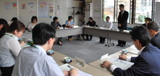

|
|
||||||
＜あいさつ＞ 埼玉県食品安全局局長 原発事故後の農畜産物への放射能汚染問題は、食に携わる全ての人が、これまでにない対応を試行錯誤しながら進めていかなければならなくなりました。今日は、皆様と安全・安心への共通認識・相互理解が一層進みますよう忌憚のない意見交換をお願いします。 消団連事務局長 食の安全の問題では、食料の十分な量の確保、衛生的管理・流通・保管、添加物など表示の問題、その他に食品テロ、原発事故の放射能汚染など新たな課題があります。 年2回のこの懇談会は、幅広い食の安全についての意見交換ができればと思います。 ＜テーマ＞ 「平成24年度埼玉県における食品安全の重点的取り組み等について」 1．農畜水産物等の放射性物質検査の体系
2．放射性物質の農畜水産物等への影響調査について ・重点的作物…茶：全工場で調査、シイタケやタケノコ等：昨年45検体→今年180検体（予定）、アユやコイ等：昨年10検体→今年100検体（予定） ・野菜等調査の頻度…毎週1回、20検体（昨年10検体） 1検体でも基準を上回るものが出れば、市町村単位で流通を停止します。 ・狭山茶…24市町、241工場、265検体の検査。生茶・荒茶・製茶の3段階で検査。 3．意見交換（○…消費者、●…食品安全局） ○ホットスポットと言われている所の検査や県のかかわり方を教えてください。 ●他のところと公平に検査を進めています。作物や土壌で高い値は出ていません。 ○川での釣り、庭先での野菜販売等の検査はどうなっていますか。 ●市町のモニタリングによる検査を行っています。しかし、なかなか難しい課題です。 4．交流…各消費者団体の活動状況を発表していただきました。 他にも多数の意見が出され、活発な意見交換となりました。 |
||||||